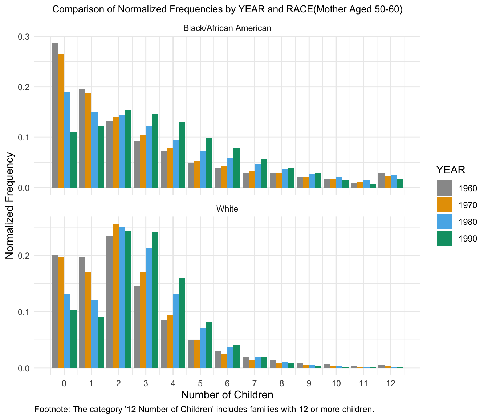
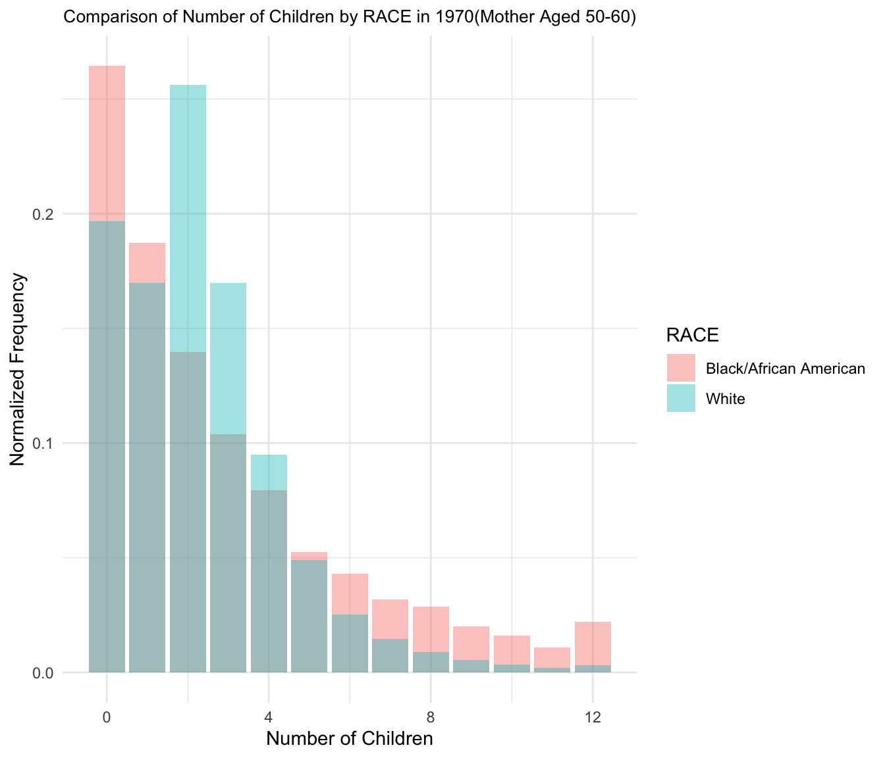
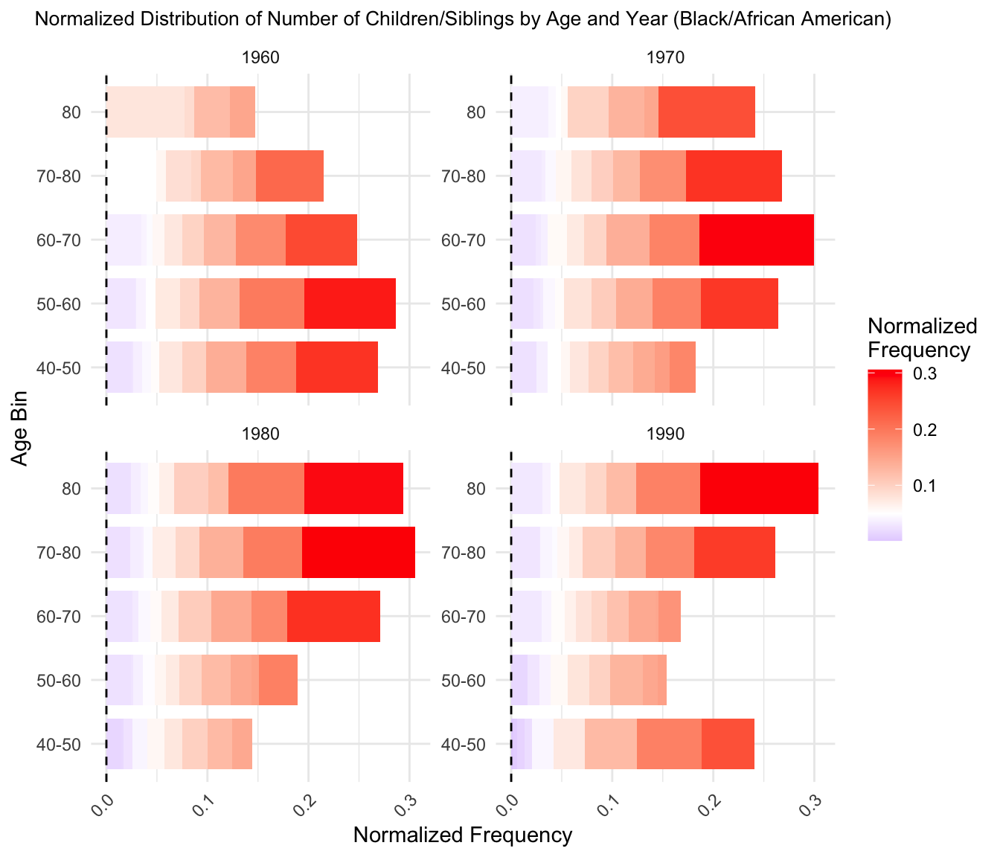
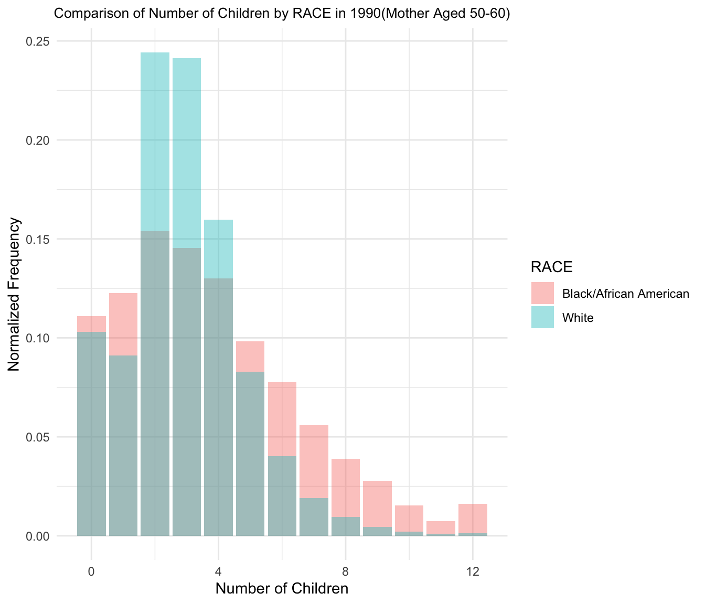

Sibling analysis
Manqing Lin
2024-08-12 15:37:48
Last updated: 2024-08-12
Checks: 7 0
Knit directory: PODFRIDGE/
This reproducible R Markdown analysis was created with workflowr (version 1.7.1). The Checks tab describes the reproducibility checks that were applied when the results were created. The Past versions tab lists the development history.
Great! Since the R Markdown file has been committed to the Git repository, you know the exact version of the code that produced these results.
Great job! The global environment was empty. Objects defined in the global environment can affect the analysis in your R Markdown file in unknown ways. For reproduciblity it’s best to always run the code in an empty environment.
The command set.seed(20230302) was run prior to running
the code in the R Markdown file. Setting a seed ensures that any results
that rely on randomness, e.g. subsampling or permutations, are
reproducible.
Great job! Recording the operating system, R version, and package versions is critical for reproducibility.
Nice! There were no cached chunks for this analysis, so you can be confident that you successfully produced the results during this run.
Great job! Using relative paths to the files within your workflowr project makes it easier to run your code on other machines.
Great! You are using Git for version control. Tracking code development and connecting the code version to the results is critical for reproducibility.
The results in this page were generated with repository version 4279c63. See the Past versions tab to see a history of the changes made to the R Markdown and HTML files.
Note that you need to be careful to ensure that all relevant files for
the analysis have been committed to Git prior to generating the results
(you can use wflow_publish or
wflow_git_commit). workflowr only checks the R Markdown
file, but you know if there are other scripts or data files that it
depends on. Below is the status of the Git repository when the results
were generated:
Ignored files:
Ignored: .DS_Store
Ignored: .Rhistory
Ignored: .Rproj.user/
Note that any generated files, e.g. HTML, png, CSS, etc., are not included in this status report because it is ok for generated content to have uncommitted changes.
These are the previous versions of the repository in which changes were
made to the R Markdown (analysis/siblings_analysis.Rmd) and
HTML (docs/siblings_analysis.html) files. If you’ve
configured a remote Git repository (see ?wflow_git_remote),
click on the hyperlinks in the table below to view the files as they
were in that past version.
| File | Version | Author | Date | Message |
|---|---|---|---|---|
| Rmd | 4279c63 | linmatch | 2024-08-12 | update plot for 1960 |
| Rmd | 2bcdccb | linmatch | 2024-08-12 | comparison plot |
| Rmd | 34a9fab | linmatch | 2024-08-09 | update plot 5 |
| Rmd | cc19d5f | linmatch | 2024-08-09 | update |
| Rmd | 6ed8da8 | linmatch | 2024-08-08 | use ggnewscale |
| Rmd | 2a57e9f | linmatch | 2024-08-08 | add different version of plot 5 |
| html | 2a57e9f | linmatch | 2024-08-08 | add different version of plot 5 |
| Rmd | 78ddf9a | linmatch | 2024-08-07 | Update siblings_analysis.Rmd |
| Rmd | fd89258 | linmatch | 2024-08-06 | create 2 version of ##5 |
| html | ee1cf75 | linmatch | 2024-08-04 | Update siblings_analysis.html |
| Rmd | a218f31 | linmatch | 2024-08-04 | shorten table |
| Rmd | a11dce5 | linmatch | 2024-08-04 | update mother plot |
| html | a11dce5 | linmatch | 2024-08-04 | update mother plot |
| Rmd | f219714 | linmatch | 2024-07-30 | update |
| html | f219714 | linmatch | 2024-07-30 | update |
| Rmd | 7420af3 | linmatch | 2024-07-30 | create distribution mother |
| html | 0ef69c6 | linmatch | 2024-07-29 | remove odd plot |
| Rmd | d4d9636 | linmatch | 2024-07-29 | remove old ##7 plot |
| Rmd | bdc3293 | linmatch | 2024-07-29 | update child_distribution plot |
| html | bdc3293 | linmatch | 2024-07-29 | update child_distribution plot |
| Rmd | 4bce25e | linmatch | 2024-07-26 | new plot |
| Rmd | ce2d916 | linmatch | 2024-07-26 | distribution by age and year |
| Rmd | 6cc6921 | linmatch | 2024-07-25 | calculate total by sex |
| Rmd | 2283b45 | linmatch | 2024-07-24 | resolve conflict |
| html | fbdfcf1 | Tina Lasisi | 2024-07-23 | Fixed allele frequency table and continued simulation development |
| Rmd | f8f2147 | Stella-Joy | 2024-07-20 | Merge branch ‘main’ of https://github.com/lasisilab/PODFRIDGE |
| Rmd | d9b1cc7 | Stella-Joy | 2024-07-20 | Update siblings_analysis.Rmd |
| Rmd | 228ec95 | linmatch | 2024-07-19 | update |
| Rmd | 069b9a9 | Stella-Joy | 2024-07-19 | Update siblings_analysis.Rmd |
| Rmd | f8e47e6 | linmatch | 2024-07-19 | update |
| Rmd | 32ce10e | linmatch | 2024-07-18 | update |
| html | 32ce10e | linmatch | 2024-07-18 | update |
| Rmd | 24bd647 | linmatch | 2024-07-18 | update |
| Rmd | d2e1c17 | linmatch | 2024-07-18 | Merge branch ‘main’ of https://github.com/lasisilab/PODFRIDGE |
| Rmd | e64bcde | linmatch | 2024-07-18 | com |
| html | 635de08 | Tina Lasisi | 2024-07-18 | Updating html for sibling analysis and STR simulations |
| Rmd | 52f208e | Stella-Joy | 2024-07-12 | Merge branch ‘main’ of https://github.com/lasisilab/PODFRIDGE |
| Rmd | c0debe3 | Stella-Joy | 2024-07-12 | Update siblings_analysis.Rmd |
| Rmd | 99618c9 | linmatch | 2024-07-12 | new com |
| html | 99618c9 | linmatch | 2024-07-12 | new com |
| html | 5284e15 | linmatch | 2024-07-03 | new com |
| Rmd | 73a6b6a | linmatch | 2024-07-03 | new com |
| Rmd | 2c460cf | linmatch | 2024-07-03 | new com |
| html | 2c460cf | linmatch | 2024-07-03 | new com |
| Rmd | b71e11f | linmatch | 2024-07-03 | new com |
| html | 7e507f5 | linmatch | 2024-07-02 | new com |
| Rmd | f67a1db | linmatch | 2024-06-28 | Update siblings_analysis.Rmd |
| Rmd | 0dd5aca | linmatch | 2024-06-27 | Update siblings_analysis.Rmd |
| Rmd | a7125e6 | Tina Lasisi | 2024-06-27 | Update siblings_analysis.Rmd |
| Rmd | 5136c40 | Tina Lasisi | 2024-06-27 | Update siblings_analysis.Rmd |
| Rmd | 58d549c | Tina Lasisi | 2024-06-27 | Update text |
| Rmd | b021a16 | linmatch | 2024-06-27 | fert ana |
| Rmd | 19aab99 | linmatch | 2024-06-26 | fert dis7 |
| html | 19aab99 | linmatch | 2024-06-26 | fert dis7 |
| html | cc5fc63 | linmatch | 2024-06-26 | fert_dis6 |
| Rmd | cdc3bd0 | linmatch | 2024-06-26 | fer_dis |
| Rmd | 326ad11 | linmatch | 2024-06-26 | fert distribution |
| Rmd | 892720f | linmatch | 2024-06-23 | fert dis3 |
| Rmd | c865baa | linmatch | 2024-06-23 | fertility dis2 |
| Rmd | f2c131d | linmatch | 2024-06-23 | fertility distribution |
| html | bce5e2e | hcvw | 2024-05-27 | Build site. |
| Rmd | 332d5a2 | hcvw | 2024-05-27 | wflow_publish(c("analysis/CODIS_DB_composition.Rmd", "analysis/final_equation.Rmd", |
Introduction
Our sibling analysis provides an overview of family size, examining the number of children a mother has and its relationship with the number of sibling each individual has. This tells us the number of first degree relatives each individual has, helping to predict the probability that an individual will be detected in the forensic database.
Data Exploration
Here, we are trying to create frequency tables for each race to show the number of children born, the number of mother who has “chborn_num” children, the number of sibling, and the number of individuals who has “n_sib” siblings.
\[ n_{sib} = chborn_{num} - 1 \]
\[ \text{freq}_{n_{\text{sib}}} = \text{freq}_{\text{mother}} \cdot \text{chborn}_{\text{num}} \]
For example, suppose 10 mothers (generation 0) have 7 children, then there will be 70 children (generation 1) in total who each have 6 siblings.
1.Frequency Table of Number of Children & Siblings of Black/African American Population
Table 1 | |||||
|---|---|---|---|---|---|
Frequency of Number of Children & Siblings of Black/African American Population | |||||
RACE | YEAR | chborn_num | freq_mother | n_sib | freq_n_sib |
Black/African American | 1,960 | 0 | 6,697 | 0 | 0 |
Black/African American | 1,960 | 1 | 4,698 | 0 | 4,698 |
Black/African American | 1,960 | 2 | 3,411 | 1 | 6,822 |
Black/African American | 1,960 | 3 | 2,445 | 2 | 7,335 |
Black/African American | 1,960 | 4 | 1,949 | 3 | 7,796 |
Black/African American | 1,960 | 5 | 1,361 | 4 | 6,805 |
Black/African American | 1,960 | 6 | 1,162 | 5 | 6,972 |
Black/African American | 1,960 | 7 | 932 | 6 | 6,524 |
Black/African American | 1,960 | 8 | 810 | 7 | 6,480 |
Black/African American | 1,960 | 9 | 588 | 8 | 5,292 |
Note. This table only displays the first 10 rows from the dataset | |||||
2.Frequency Table of Number of Children & Siblings of White Population
Table 2 | |||||
|---|---|---|---|---|---|
Frequency of Number of Children & Siblings of White Population | |||||
RACE | YEAR | chborn_num | freq_mother | n_sib | freq_n_sib |
White | 1,960 | 0 | 46,202 | 0 | 0 |
White | 1,960 | 1 | 47,433 | 0 | 47,433 |
White | 1,960 | 2 | 60,732 | 1 | 121,464 |
White | 1,960 | 3 | 41,272 | 2 | 123,816 |
White | 1,960 | 4 | 25,666 | 3 | 102,664 |
White | 1,960 | 5 | 15,327 | 4 | 76,635 |
White | 1,960 | 6 | 9,697 | 5 | 58,182 |
White | 1,960 | 7 | 6,347 | 6 | 44,429 |
White | 1,960 | 8 | 4,518 | 7 | 36,144 |
White | 1,960 | 9 | 2,990 | 8 | 26,910 |
Note. This table only displays the first 10 rows from the dataset | |||||
3.Summary Statistics of Number of Siblings of Black/African American Population
Table 3 | ||||
|---|---|---|---|---|
Summary Statistics of Number of Siblings of Black/African American Population | ||||
RACE | YEAR | Mean | Variance | Std_Dev |
Black/African American | 1,960 | 3.02 | 9.69 | 3.11 |
Black/African American | 1,970 | 3.00 | 8.86 | 2.98 |
Black/African American | 1,980 | 3.21 | 8.66 | 2.94 |
Black/African American | 1,990 | 3.20 | 7.62 | 2.76 |
4.Summary Statistics of Number of Siblings of White Population
Table 4 | ||||
|---|---|---|---|---|
Summary Statistics of Number of Siblings of White Population | ||||
RACE | YEAR | Mean | Variance | Std_Dev |
White | 1,960 | 2.62 | 5.39 | 2.32 |
White | 1,970 | 2.45 | 4.51 | 2.12 |
White | 1,980 | 2.55 | 4.08 | 2.02 |
White | 1,990 | 2.53 | 3.59 | 1.89 |
Data Visualization
1.Distribution of Number of Children by Census Year for each Race

2.Distribution of Number of Sibling by Census Year for each Race

3.Distribution of Number of Children/Siblings by Census Year
Plot for Black/African American Population


4.Comparison histograms of Number of Children/Siblings(Mother aged 50-60)
Plot for 1960

Plot for 1970
Plot for 1980
Plot for 1990
5.Distribution of Number of Children by Age, Year and RACE

6. Distribution of Number of Mother By Age and Census Year

R version 4.3.2 (2023-10-31)
Platform: x86_64-apple-darwin20 (64-bit)
Running under: macOS Monterey 12.7.4
Matrix products: default
BLAS: /Library/Frameworks/R.framework/Versions/4.3-x86_64/Resources/lib/libRblas.0.dylib
LAPACK: /Library/Frameworks/R.framework/Versions/4.3-x86_64/Resources/lib/libRlapack.dylib; LAPACK version 3.11.0
locale:
[1] en_US.UTF-8/en_US.UTF-8/en_US.UTF-8/C/en_US.UTF-8/en_US.UTF-8
time zone: America/Detroit
tzcode source: internal
attached base packages:
[1] stats graphics grDevices utils datasets methods base
other attached packages:
[1] gridExtra_2.3 ggnewscale_0.5.0 patchwork_1.2.0 rempsyc_0.1.8
[5] scales_1.3.0 knitr_1.45 viridis_0.6.5 viridisLite_0.4.2
[9] lubridate_1.9.3 forcats_1.0.0 stringr_1.5.1 dplyr_1.1.4
[13] purrr_1.0.2 tidyr_1.3.1 tibble_3.2.1 ggplot2_3.5.1
[17] tidyverse_2.0.0 readr_2.1.5 workflowr_1.7.1
loaded via a namespace (and not attached):
[1] tidyselect_1.2.1 farver_2.1.1 fastmap_1.1.1
[4] fontquiver_0.2.1 promises_1.2.1 digest_0.6.34
[7] timechange_0.3.0 mime_0.12 lifecycle_1.0.4
[10] gfonts_0.2.0 ellipsis_0.3.2 processx_3.8.3
[13] magrittr_2.0.3 compiler_4.3.2 rlang_1.1.3
[16] sass_0.4.8 tools_4.3.2 utf8_1.2.4
[19] yaml_2.3.8 data.table_1.15.0 askpass_1.2.0
[22] labeling_0.4.3 curl_5.2.0 xml2_1.3.6
[25] httpcode_0.3.0 withr_3.0.0 grid_4.3.2
[28] fansi_1.0.6 git2r_0.33.0 gdtools_0.3.7
[31] xtable_1.8-4 colorspace_2.1-0 crul_1.4.2
[34] cli_3.6.2 rmarkdown_2.25 crayon_1.5.2
[37] ragg_1.2.7 generics_0.1.3 rstudioapi_0.15.0
[40] httr_1.4.7 tzdb_0.4.0 cachem_1.0.8
[43] vctrs_0.6.5 jsonlite_1.8.8 fontBitstreamVera_0.1.1
[46] callr_3.7.3 hms_1.1.3 systemfonts_1.0.5
[49] jquerylib_0.1.4 glue_1.7.0 ps_1.7.6
[52] stringi_1.8.3 flextable_0.9.6 gtable_0.3.4
[55] later_1.3.2 munsell_0.5.0 pillar_1.9.0
[58] htmltools_0.5.7 openssl_2.1.1 R6_2.5.1
[61] textshaping_0.3.7 rprojroot_2.0.4 evaluate_0.23
[64] shiny_1.8.0 highr_0.10 httpuv_1.6.14
[67] fontLiberation_0.1.0 bslib_0.6.1 Rcpp_1.0.12
[70] zip_2.3.1 uuid_1.2-0 officer_0.6.6
[73] whisker_0.4.1 xfun_0.41 fs_1.6.3
[76] getPass_0.2-4 pkgconfig_2.0.3